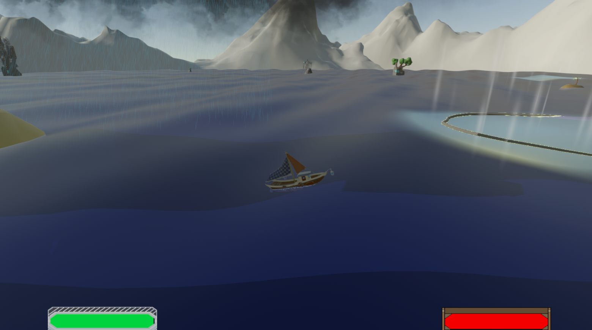
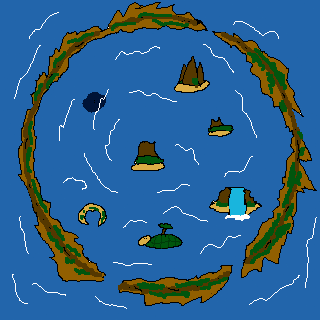
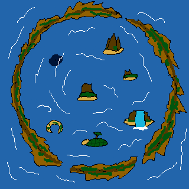
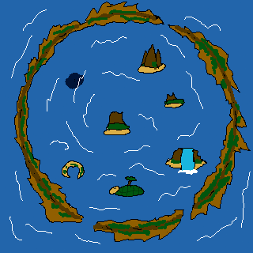

Cyclos : Les flots incompris
Mes accomplissements
- Conception du world design.
- Conception des niveaux.
- Programmation de bancs de poissons (boids).
- Programmation d'IA (behavior tree).
Crédits
- Raphaël Blanchard
- Matteo Basso
- Jessica Ferreira
- Antoine Belliard
Galerie

 

